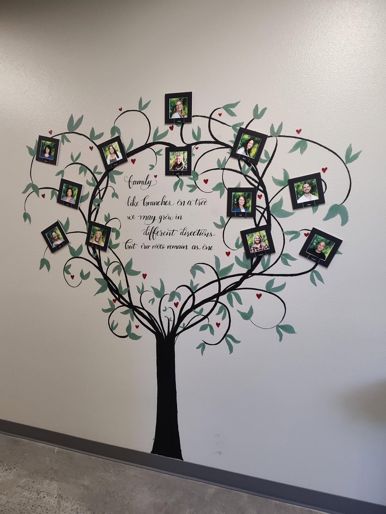
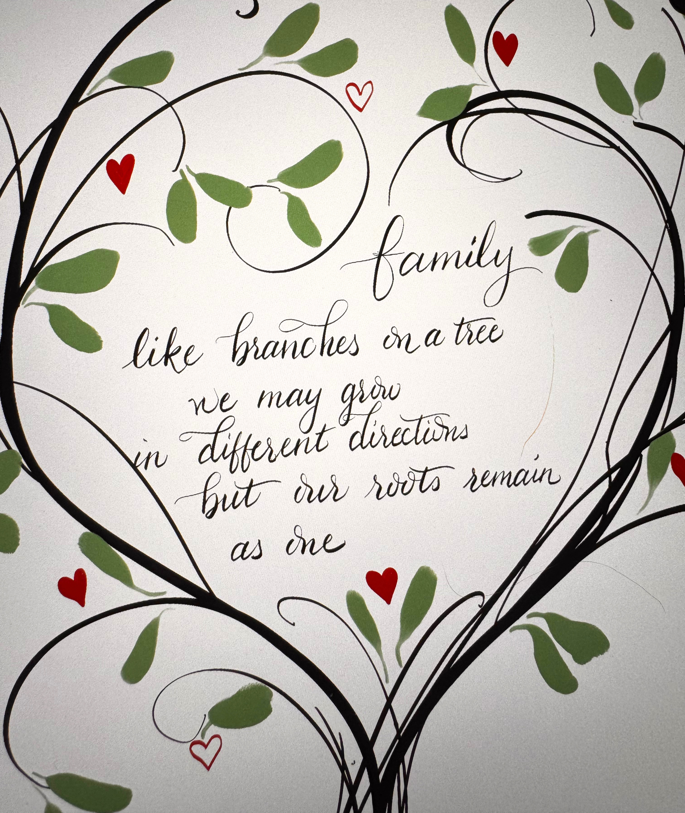
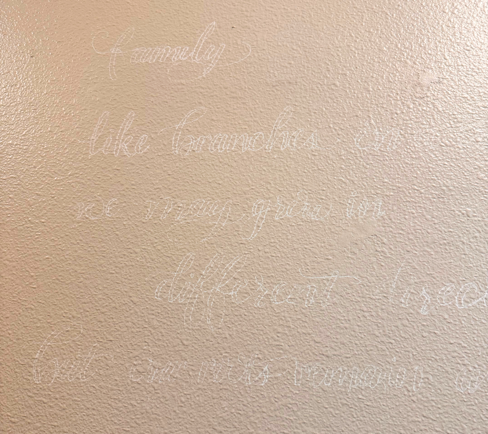
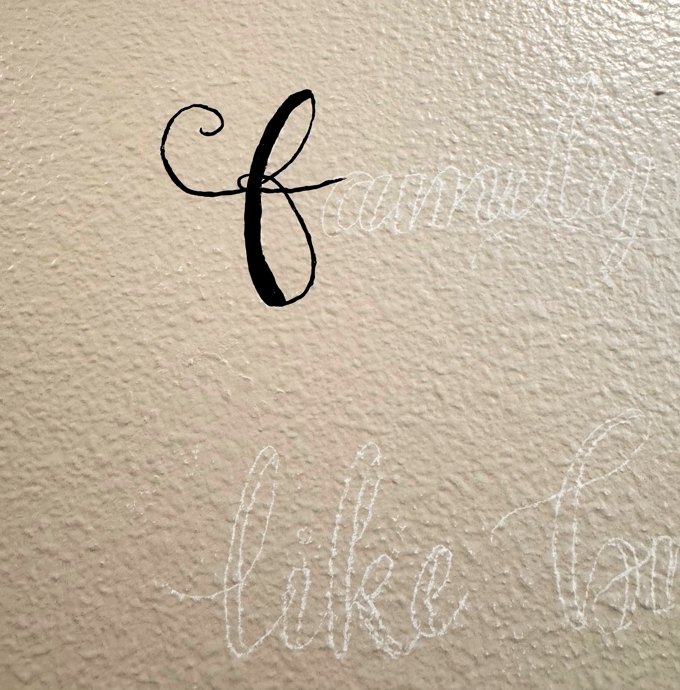

A Mural of Love
Creating a Staff Family Tree Mural for a Local Non-Profit
Organization
8/19/2026 by Melissa Hundley

While I am pretty sure I’ve painted a design on a wall before, I 100% do not remember it…and probably for good reason. When I started lettering, I did a lot on stretched canvases with acrylic paint. Getting that fine detail on canvas was difficult because it’s a textured surface, and a brush is never as stiff as a calligraphy nib which usually meant that I wasn’t going to have as precise of letter forms as I was used to on paper. At the time, I had a lot of canvases and a lot of acrylic paint, so I did it anyway and just made the best of it.
Now let’s talk about walls…Not only are they textured (at least most of the time), but they are vertical. I used to do a lot of my calligraphy on a drafting table at a slight angle, but never vertical. Also, practicing on walls isn’t really an option unless you’re already planning to paint or re-paint a wall. I found myself a little stressed leading up to my first day of painting…I was a bit worried about how much I was going to hurt after a four-hour block of painting on a wall.
Let’s back up just a bit. A couple of months ago, a dear friend of mine called me and asked if I’d be interested in painting a mural for the non-profit organization she works for. I thought to myself, I don’t do murals…I just do lettering with some splashes of watercolor behind so it doesn’t look too boring. I asked some questions about the project, and she sent me a picture of a wall decal-type design taped to the wall. It was basically black lines with text in the middle…I figured I could do that, so I agreed to meet with her and talk some more about it.

Before meeting, I drew out a concept sketch based on what I knew about the project ask so I could show them something when I was there. A little bit to my surprise, when I showed them my drawing, they absolutely loved it! They showed me where they wanted the mural painted, and I went home and started thinking about a quote. Over the next couple of weeks, we made a few small revisions to the concept drawing, and scheduled two days for me to come out and paint.
There were a lot of things I started to question such as, what kind of paint to use? Could I really do this in eight hours? Had I just made a huge mistake in taking this on? So I messaged a friend that has done a ton of murals and simply asked her what kind of paint she uses. When she said acrylic with a sealant spray, I was so relieved. I’ve worked with acrylic a lot and knew some of the challenges (my original thought was actual wall paint from the hardware store…but never having used it for detail work, I was nervous that it might be too runny or take too many coats…again, it’s hard to practice and test things on a wall…).
I went and bought some new paints as mine are probably at least a decade old, and a few new, stiff brushes to help get the cleanest lettering possible. Then I went home to solve another puzzle. Transferring the lettering to the wall so I didn’t have to freehand it. I was prepared to use chalk, but then realized I still had saral paper (basically paper with a chalky side that transfers when you write on the non-chalky side and it’s erasable!). So that’s the route I went. I packed up my little art cart, and off we went.

I had everything I needed. Paint, brushes, my stencil, saral paper, pencil, eraser, water (both for painting and drinking), towels, my custom work apron, headphones and my phone. I was ready. Still a little nervous, but confident that I could bring this vision to life.

I started with laying out where the text would go so that it would be readable at eye level (slightly taller than I am…) but not so high I needed a ladder to paint it. From there, it was time to add the stencil to the wall and make that scary first stroke of paint…no going back now!

Slowly but surely the lettering took shape. After four hours of painting, I had finished the lettering (barley), and about half of the tree outline. I remember thinking three hours in that I was going to be lucky to get this done in the two days I had allotted.
Day two brought lots of progress quickly as I got to work in colors other than black! I finished up the branches and started adding the leaves and then the little red hearts to finish. Looking back over this project, I am so thankful that they trusted me to bring it to life! I know several of the employees there and call them friends, and it blessed me so much to give them something that can bring them joy for years to come!

One final funny (I think) note…as I was leaving, one of the ladies that I had worked with on this project mentioned they were thinking of other places that maybe in the future I could letter on the walls. I mentioned, “you know, paper works well too…that way you can move it later if you want to…” Would I do it again…Absolutely, in a heart beat especially for such a great organization, but would I prefer working on paper with ink…? 100%!
If you’re thinking about a mural, or wall art (either framed or on a canvas), let’s talk! I love putting together custom pieces for people that are special and unique! Send me an email or find me on social media!